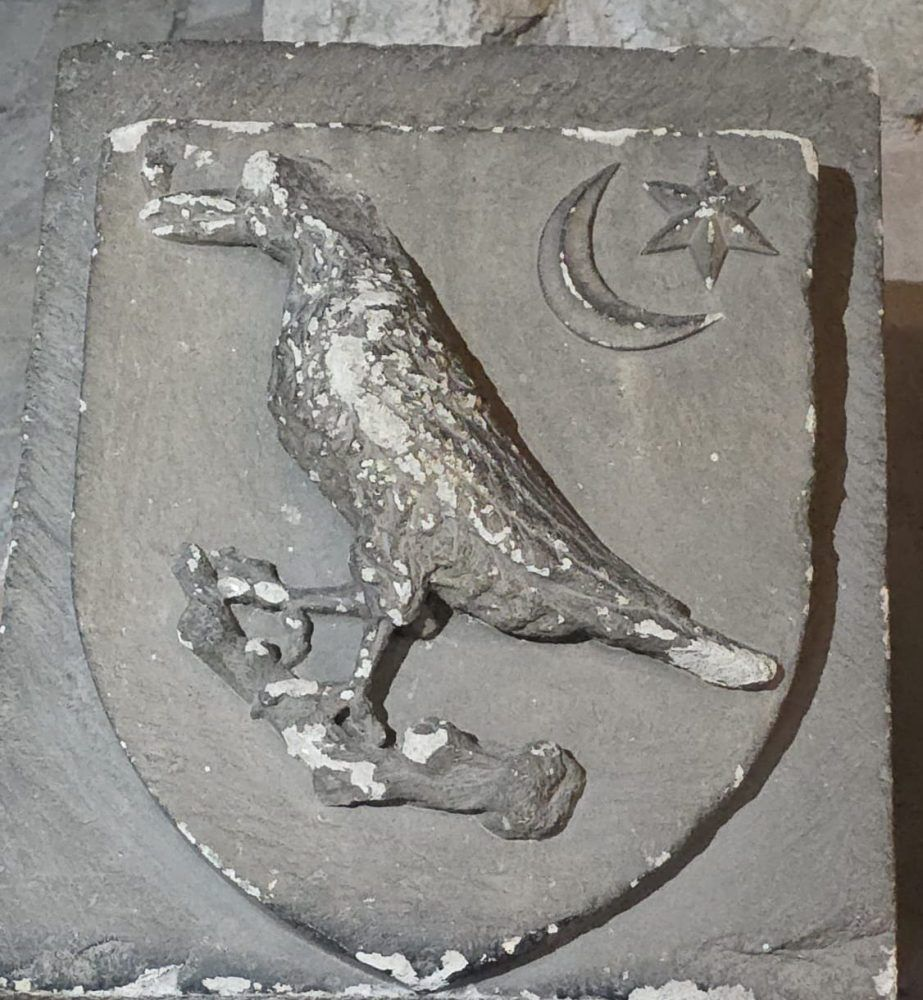
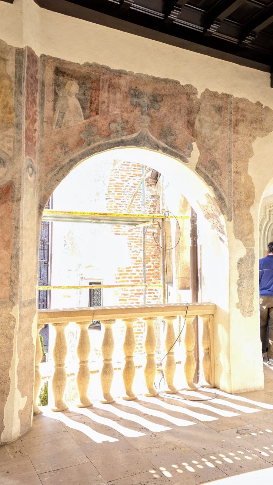
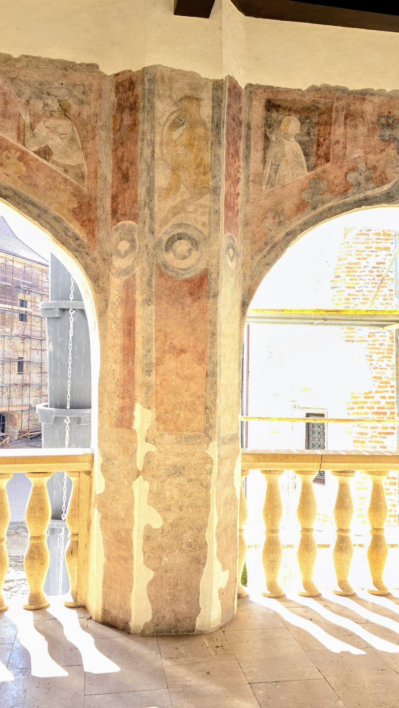
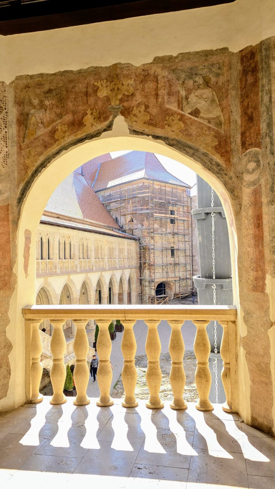
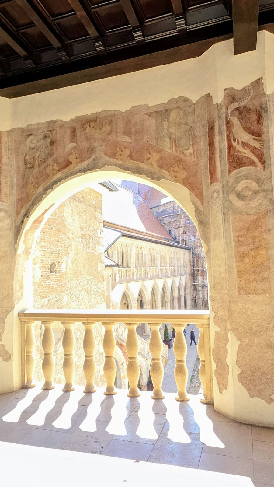
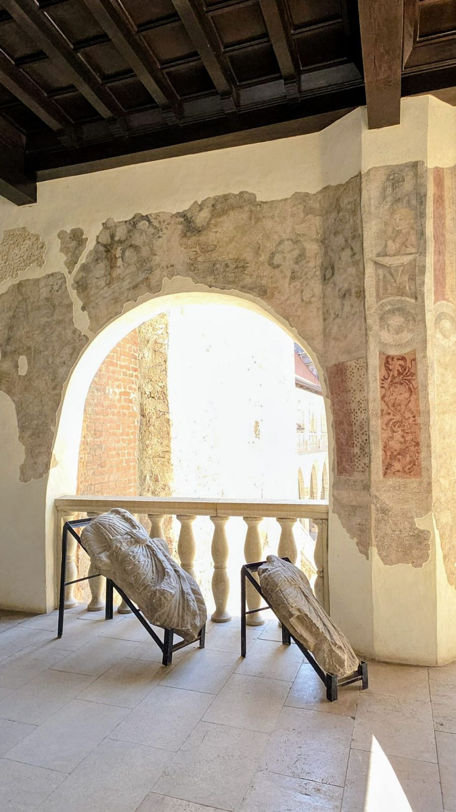

Journey 02 · Hunedoara Note 4 of 12 Stories of
Stories of Romania: The Raven of Corvin Castle

A fost odată ca niciodată — there was once, as never before, a young boy who would grow up to become one of the most powerful men in the Kingdom of Hungary.
But before he was a general, before he commanded armies and built castles of stone and legend, he was simply the son of a woman with a secret, living near a forest with a raven.
But the story starts before the boy, the raven and the secret. The story starts… with a King.
Că dacă n-ar fi, nu s-ar povesti – if it were not so, it would not be told that King Sigismund of Luxembourg, before he wore the iron crown of Italy and before the Bloody Sabor of Križevci fell, once rode into the lands that would be Hunedoara with his troops on his way to battle the Turks. He halted his army by the banks of the river Strei, deciding to spend a few weeks.
In need of entertainment, the King ordered one of his Knights to find a beautiful young lady to brighten his days and cheer his nights. The captain went in search of a young lady, and returned to the king with the daughter of a Romanian nobelman named Elizabeth. Her beauty was beyond compare, so much so that it overwhelmed the King and he fell immediately in love with Elizabeth.

And so, as it goes, the two filled their days and nights.
But a King’s love is fickle, and the battlefield was calling, and after only two weeks, King Sigismund departed for his crusade.

The King and his knights fought bravely, and that crowned ginger fox began his victory tour to return to his castle. Once again, he stopped with his troops by the River Strei, and he called upon the beautiful Elizabeth to entertain him once more.
But this time, when Elizabeth appeared, it was with tears in her eyes. “My King!” she must have cried, “I was afraid this may happen… I am with child!” The King was overjoyed with the news of having a child, and assured Elizabeth that he would take care of the child’s future. He gave to her a golden ring, a sign of recognition for the day the child presents themselves at court.

And so, as it goes, Elizabeth was married quickly to a noble refugee, and the King returned to his castle and his battles, and by and by a child was born. Time passed, and the baby grew into a boy. Sadly, his father passed away, and the boy – named John – returned with his mother to her native lands.

And so it goes that John grew from a boy to a youth.
One day, went out hunting with his Uncle, John was playing with his golden ring. As he rolled the ring between his fingers, holding it up to the sunlight, it glinted and shone brightly in the woods. The bright golden ring caught the attention of a raven in a tree.
Ravens are tricky things, and this raven was not just tricky but greedy too. Its dark sleek feathers shone purple and blue in the dappled forest light as it watched the golden ring glint. This raven in particular could see the threads of fate, and knew that whomever held that golden ring would one day be recognized by the king. It’s shiny black eyes watched the way the ring shone in the light and its mind was filled with the desire for gold.
With a sudden swoop, the raven snatched the golden ring from John’s hand!
In some stories, John quickly grabbed a bow and arrow and shot the greedy trickster bird from the sky. In others, his Uncle shot the bird, retrieving the ring for John. No matter the story, the end was the same: the raven fell dead to the forest floor, and John recovered his ring.

And so it goes that one day John presented himself to the court of King Sigismund, bowing low and presenting the token of the golden ring to prove his birthright. The King was pleased with such a well-mannered young man, and asked him to tell him about his life. And so, John told the King of how the raven almost stole his golden ring.
The King was so delighted by the story, he awarded John not just many riches, but also Hunyad Castle, all its lands and granted him his own coat of arms – that of a raven holding a golden ring in its beak.
And John became known as John Hunyadi, who would one day would become a master of military skills and an eminent statesman, Regent-Governor of the Kingdom of Hungary, Captain in Chief of the Kingdom of Hungary and Voivode of Transylvania, Count of the Szekelys.
But that’s the start of another story.
Originally published at fieldnotesfromabroad.com/2026/03/09/stories-of-romania-2/